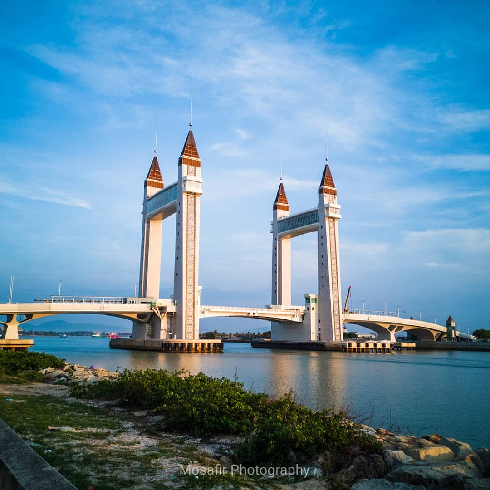
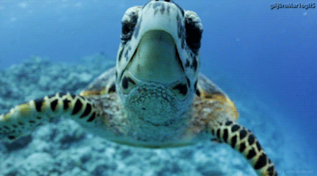

<!DOCTYPE html>
<html>
<head>
	<title>WELCOME TO TERENGGANU!</title>
	<link rel= "stylesheet" href="style.css">
</head>

<html>
<head>
<style> 
body {
  background-image: url("sea.jpg");
  background-color: #cccccc;

}

</style>
</head>
</body>
</html>


<hr>
<center>
<a href="index.html" "title="click this button to My Homepage">My Homepage</a>
<a href="about.html" "title="click this button to About">Attraction</a>
<a href="gallery.html" "title="click this button to Best Place to Stay">Best Place to Stay</a>
<a href="food.html" "title="click this button to Foodie">Foodie</a>
<a href="best.html" "title="click this button to The Best Spot">The Best Spot</a>
<a href="contact me.html" "title="click this button to Contact Me">Contact Me</a>
</center>

<body>
<center><h1>
WELCOME TO TERENGGANU</center></h1>

<center><p>WATCH ME!:</p>
<a href=https://www.youtube.com/watch?v=lpYzt_Wrh_8" title="Beautiful Terengganu" target="_blank">Video:Beautiful Terengganu</a>
<hr>


<center>
 </center>


<p>The state of Terengganu overlooks the South China Sea on the east side of Malaysia. <br> A charming holiday destination, Terengganu has a stretch of beautiful beaches and even more spectacular islands.

Popularly known as the ‘Land of Turtles’, many turtle species such as Olive Ridleys and Leatherbacks come to nest on its beaches each year.</p>

<p>Terengganu is home to a diverse and close-knit society, where people are friendly and charm that exuberantly warmth and grace, with strong morals and values. People of different races share the bonds of neighborhood, a strong liking for local food and speak the same local dialect.
</p>

<p>Besides, Terengganu is endowed with unmatched natural beauty. Having the longest coastline (244km) of wonderful beaches, the lush tropical rainforests, a hidden paradise unmoved by time and stunning islands with its tranquil emerald waters turn magnificently golden hues at the touch of the sun’s first rays. Terengganu is also rich with its customs and tradition, upheld through generations and visible in its way of life, its arts and handicrafts, its tradition culinary and its heritage. Terengganu is in a league of its own as a vibrant tourist destination.
</p>

<p> 
</p></center></font>

<center>
 
<font face="algerian" size= "100px" color= "black">VISIT ME IN TERENGGANU!
</center></font>


<p>The state of Terengganu overlooks the South China Sea on the east side of Malaysia. A charming holiday destination, Terengganu has a stretch of beautiful beaches and even more spectacular islands.

Popularly known as the ‘Land of Turtles’, many turtle species such as Olive Ridleys and Leatherbacks come to nest on its beaches each year.</p>

<p> 
</p></center></font>

<hr>
<center>
<a href="index.html" "title="click this button to My Homepage">My Homepage</a>
<a href="about.html" "title="click this button to About">Attraction</a>
<a href="gallery.html" "title="click this button to Best Place to Stay">Best Place to Stay</a>
<a href="food.html" "title="click this button to Foodie">Foodie</a>
<a href="best.html" "title="click this button to The Best Spot">The Best Spot</a>
<a href="contact me.html" "title="click this button to Contact Me">Contact Me</a>
</center>


</body>
</html>